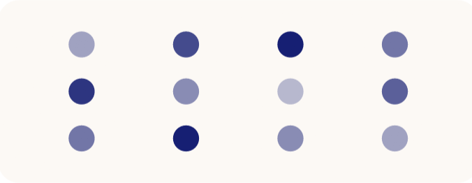
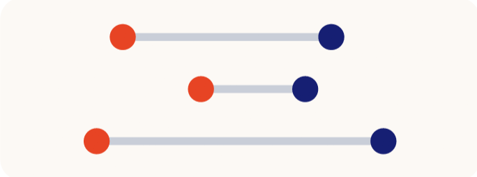
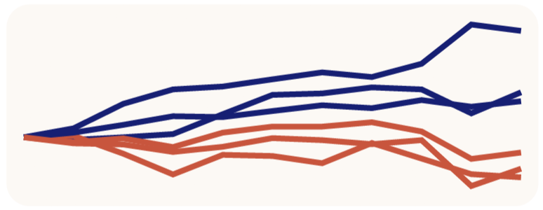
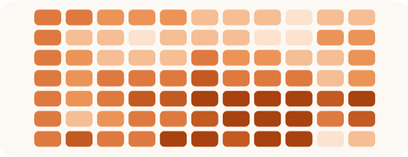
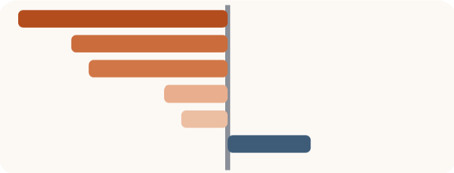

01
Peak months and seasons
Are there months or seasons when road crash hospitalisations peak?

View chart →COS30045 • DATA VISUALISATION PROJECT
Explore how road crash hospitalisations in Australia changed between 2011 and 2021, from seasonal peaks to the impact of COVID-19 in 2020.
01
Are there months or seasons when road crash hospitalisations peak?

View chart →02
How does the gap between males and females change across age groups and road user types?

View chart →03
Which road user groups increased or decreased the most from 2011 to 2021?

View chart →04
How have road crash hospitalisation rates changed among younger and older Australians between 2011 and 2021?

View chart →05
How did 2020 (the COVID-19 year) differ from the 2011–2019 trend, and which road user groups changed most?

View chart →